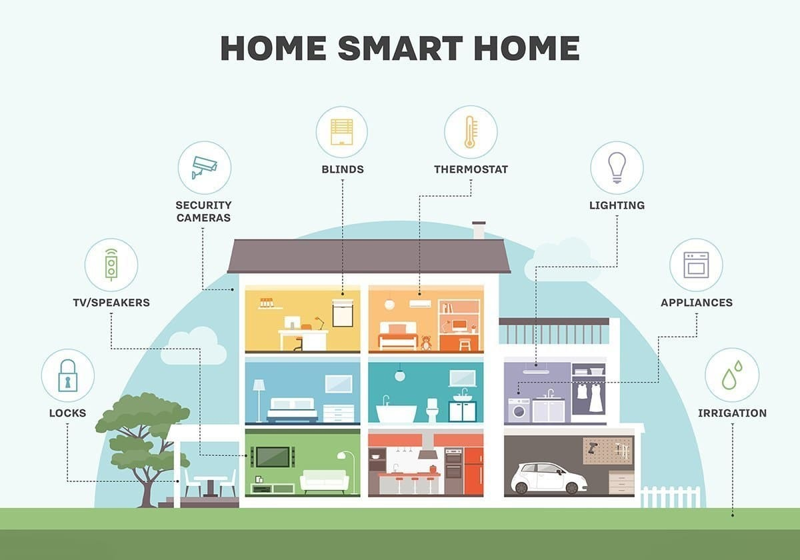

Topic information
- Category: Technological Innovations
- Posted on: 6 January, 2022
- Author: Aditya Verma
What Is a Smart Home?
A smart home refers to a convenient home setup where appliances and devices can be automatically controlled remotely from anywhere with an internet connection using a mobile or other networked device. Devices in a smart home are interconnected through the internet, allowing the user to control functions such as security access to the home, temperature, lighting, and a home theater remotely.
KEY TAKEAWAYS
- A smart home allows homeowners to control appliances, thermostats, lights, and other devices remotely using a smartphone or tablet through an internet connection.
- Smart homes can be set up through wireless or hardwired systems.
- Smart home technology provides homeowners with convenience and cost savings.
- Security risks and bugs continue to plague makers and users of smart home technology.
How Smart Homes Work ?
A smart home’s devices are connected with each other and
can be accessed through one central point—a smartphone, tablet, laptop, or game console. Door locks,
televisions, thermostats, home monitors, cameras, lights, and even appliances such as the refrigerator can
be controlled through one home automation system. The system is installed on a mobile or other networked
device, and the user can create time schedules for certain changes to take effect.
Smart home appliances come with self-learning skills so they can learn the homeowner’s schedules and make
adjustments as needed. Smart homes enabled with lighting control allow homeowners to reduce electricity
use
and benefit from energy-related cost savings. Some home automation systems alert the homeowner if any
motion
is detected in the home when they're away, while others can call the authorities—police or the fire
department—in case of imminent situations.
Once connected, services such as a smart doorbell, smart security system, and smart appliances are all
part
of the internet of things (IoT) technology, a network of physical objects that can gather and share
electronic information.
FAST FACT - Security and efficiency are the main reasons
behind the increase in smart home technology use.

Smart homes can feature either wireless or hardwired
systems—or both. Wireless systems are easier to install. Putting in a wireless home automation system with
features such as smart lighting, climate control, and security can cost several thousand dollars, making
it
very cost-friendly.
Hardwired systems, on the other hand, are considered more reliable and are typically more difficult to
hack.
A hardwired system can increase the resale value of a home. But there is a drawback—it's fairly expensive.
Installing a luxury and hardwired smart system can cost homeowners tens of thousands of dollars.
The global home automation market was valued at about $24 billion in 2016, growing to $45.8 billion in
2017. In the U.S. smart home market, the number of active households is expected to amount to 77.0m users
by 2025.
Video entertainment and smart speakers are currently the largest component of smart home technology,
followed by home security and monitoring services. Smart speaker technology has fully penetrated the U.S.
market, where more than one-third of households currently use a device like the Amazon Echo (Alexa) or
Google Nest.
Examples of smart home technologies
Nearly every aspect of life where technology has entered the domestic space (lightbulbs, dishwashers and so on) has seen the introduction of a smart home alternative:
- Smart TVs connect to the internet to access content through applications, such as on-demand video and music. Some smart TVs also include voice or gesture recognition.
- In addition to being able to be controlled remotely and customized, smart lighting systems, such as Hue from Philips Lighting Holding B.V., can detect when occupants are in the room and adjust lighting as needed. Smart lightbulbs can also regulate themselves based on daylight availability.
- Smart thermostats, such as Nest from Nest Labs Inc., come with integrated Wi-Fi, allowing users to schedule, monitor and remotely control home temperatures. These devices also learn homeowners' behaviors and automatically modify settings to provide residents with maximum comfort and efficiency. Smart thermostats can also report energy use and remind users to change filters, among other things.
- Using smart locks and garage-door openers, users can grant or deny access to visitors. Smart locks can also detect when residents are near and unlock the doors for them.
- With smart security cameras, residents can monitor their homes when they are away or on vacation. Smart motion sensors are also able to identify the difference between residents, visitors, pets and burglars, and can notify authorities if suspicious behavior is detected.
- Pet care can be automated with connected feeders. Houseplants and lawns can be watered by way of connected timers.
- Kitchen appliances of all sorts are available, including smart coffee makers that can brew a fresh cup automatically at a programmed time; smart refrigerators that keep track of expiration dates, make shopping lists or even create recipes based on ingredients currently on hand; slower cookers and toasters; and, in the laundry room, washing machines and dryers.
- Household system monitors may, for example, sense an electric surge and turn off appliances or sense water failures or freezing pipes and turn off the water so the basement doesn't flood, for example.
Advantages and Disadvantages of Smart Homes
Pros
Installing a smart home technology system provides
homeowners with convenience. Rather than controlling appliances, thermostats, lighting, and other features
using different devices, homeowners can control them all using one device—usually a smartphone or
tablet.
Since they're connected to a portable device, users can get notifications and updates on issues in their
homes. For instance, smart doorbells allow homeowners to see and communicate with people who come to their
doors even when they're not at home. Users can set and control the internal temperature, lighting, and
appliances as well.
For the cost of setting up the smart system, homeowners can benefit from significant cost savings.
Appliances and electronics can be used more efficiently, lowering energy costs.
Cons
While the smart home offers convenience and cost savings,
there are still challenges. Security risks and bugs continue to plague makers and users of the technology.
Adept hackers, for example, can gain access to a smart home's internet-enabled appliances. In October
2016,
a botnet called Mirai infiltrated interconnected devices of DVRs, cameras, and routers to bring down a
host
of major websites through a denial of service attack, also known as a DDoS attack.
Measures to mitigate the risks of such attacks include protecting smart appliances and devices with a
strong
password, using encryption when available, and only connecting trusted devices to one's network.
As noted above, the costs of installing smart technology can run anywhere from a few thousand dollars for
a
wireless system to tens of thousands of dollars for a hardwired system. It's a heavy price to pay,
especially since there may be a steep learning curve to get used to the system for everyone in the
household.
How smart homes work/smart home implementation
Newly built homes are often constructed with smart home
infrastructure in place. Older homes, on the other hand, can be retrofitted with smart technologies. While
many smart home systems still run on X10 or Insteon, Bluetooth and Wi-Fi have grown in popularity.
Zigbee and Z-Wave are two of the most common home automation communications protocols in use today. Both
use
mesh network technologies, short-range, low-power radio signals to connect smart home systems. Though both
target the same smart home applications, Z-Wave has a range of 30 meters to Zigbee's 10 meters, with
Zigbee
often perceived as the more complex of the two. Zigbee chips are available from multiple companies, while
Z-Wave chips are only available from Sigma Designs.
A smart home is not a collection of disparate smart devices and appliances, but ones that work together to
create a remotely controllable network. All devices are controlled by a master home automation controller,
often called a smart home hub. The smart home hub is a hardware device that acts as the central point of
the
smart home system and is able to sense, process data and communicate wirelessly. It combines all of the
disparate apps into a single smart home app that can be controlled remotely by homeowners. Examples of
smart
home hubs include Amazon Echo, Google Home, Insteon Hub Pro, Samsung SmartThings and Wink Hub.
Some smart home systems can be created from scratch, for example, using a Raspberry Pi or other
prototyping
board. Others can be purchased as a bundled smart home kit -- also known as a smart home platform -- that
contains the pieces needed to start a home automation project.
In simple smart home scenarios, events can be timed or triggered. Timed events are based on a clock, for
example, lowering the blinds at 6:00 p.m., while triggered events depend on actions in the automated
system;
for example, when the owner's smartphone approaches the door, the smart lock unlocks and the smart lights
go
on.
Machine learning and artificial intelligence (AI) are becoming increasingly popular in smart home systems,
allowing home automation applications to adapt to their environments. For example, voice-activated
systems,
such as Amazon Echo or Google Home, contain virtual assistants that learn and personalize the smart home
to
the residents' preferences and patterns.
Smart buildings
While every smart home is a smart building, not every
smart
building is a smart home. Enterprise, commercial, industrial and residential buildings of all shapes and
sizes -- including offices, skyscrapers, apartment buildings, and multi-tenant offices and residences --
are
deploying IoT technologies to improve building efficiency, reduce energy costs and environmental impact,
and
ensure security, as well as improve occupant satisfaction.
Many of the same smart technologies used in the smart home are deployed in smart buildings, including
lighting, energy, heating and air conditioning, and security and building access systems.
For example, a smart building can reduce energy costs using sensors that detect how many occupants are in
a
room. The temperature can automatically adjust, putting cool air on if sensors detect a full conference
room, or turning the heat down if everyone in the office has gone home for the day.
Smart buildings can also connect to the smart grid. Here, smart building components and the electric grid
can "talk" and "listen" to each other. With this technology, energy distribution can be managed
efficiently,
maintenance can be handled proactively and power outages can be responded to more quickly.
Beyond these benefits, smart buildings can provide building owners and managers the benefit of predictive
maintenance. Janitors, for example, can refill restroom supplies when usage sensors monitor the soap or
paper towel dispensers are low. Or maintenance and failures can be predicted on building refrigeration,
elevators and lighting systems.
The origins of the smart home
With the 1975 release of X10, a communication protocol for home automation, the smart home, once a pipe dream a la The Jetsons, came to life. X10 sends 120 kHz radio frequency (RF) bursts of digital information onto a home's existing electric wiring to programmable outlets or switches. These signals convey commands to corresponding devices, controlling how and when the devices operate. A transmitter could, for example, send a signal along the house's electric wiring, telling a device to turn on at a specific time.
However, as electrical wiring isn't designed to be free from radio-band "noise," X10 was not always fully reliable. Signals would be lost and, in some cases, signals wouldn't cross circuits that were wired on different polarities, created when 220-volt service is split into a pair of 100-volt feeds, as is common in the U.S. Additionally, X10 was initially a one-way technology, so while smart devices can take commands, they cannot send data back to a central network. Later, however, two-way X10 devices became available, albeit at a higher cost.
When home automation company Insteon came on the scene in
2005, it introduced technology that combined electric wiring with wireless signals. Other protocols,
including Zigbee and Z-Wave, have since emerged to counter the problems prone to X10, though X10 remains a
widely installed communications protocol to this day.
Nest Labs was founded in 2010 and released its first smart product, the Nest Learning Thermostat, in 2011.
The company also created smart smoke/carbon monoxide detectors and security cameras. After being acquired
by
Google in 2015, it became a subsidiary of Alphabet Inc. in the same year.
In 2012, SmartThings Inc. launched a Kickstarter campaign, raising $1.2 million to fund its smart home system. Following additional funding, the company came on the market in August 2013 and was acquired by Samsung in 2014. More recently, companies including Amazon, Apple and Google have released their own smart home products and domotics platforms, including Amazon Echo, Apple HomeKit and Google Home.